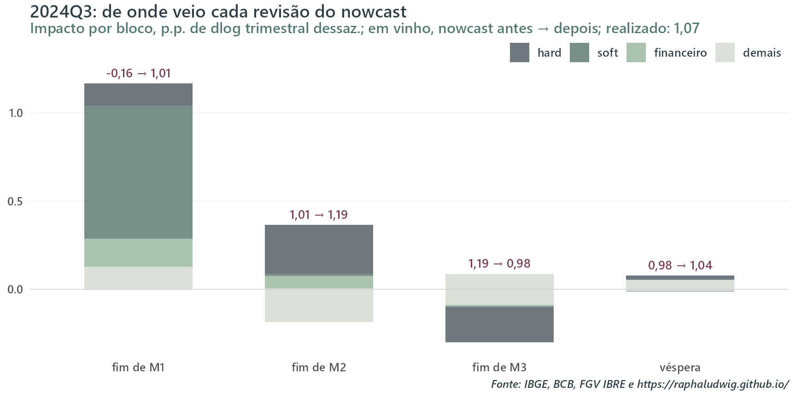
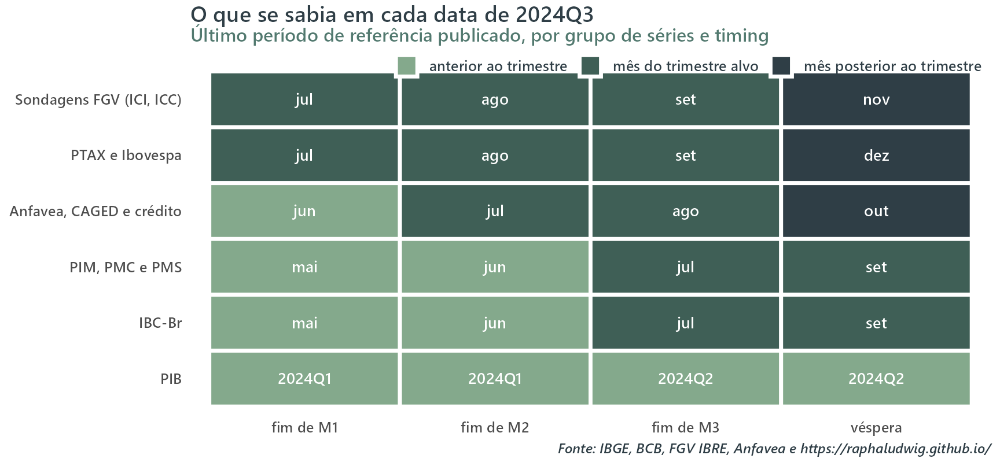
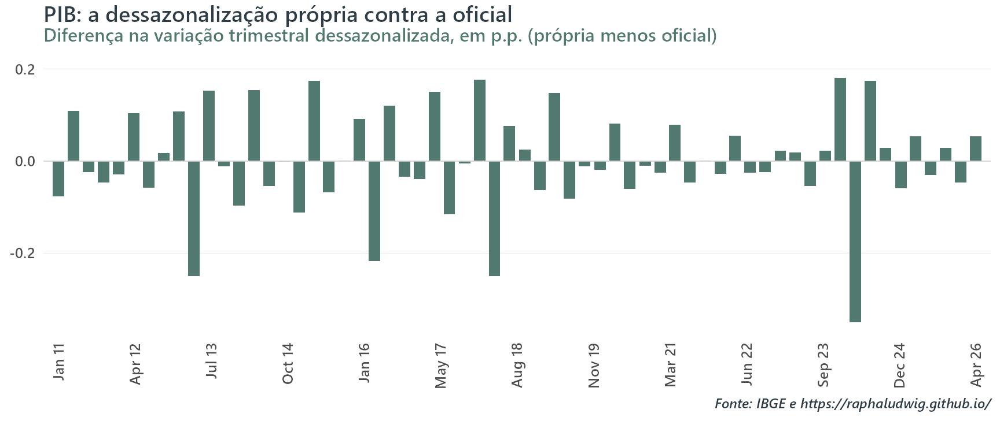
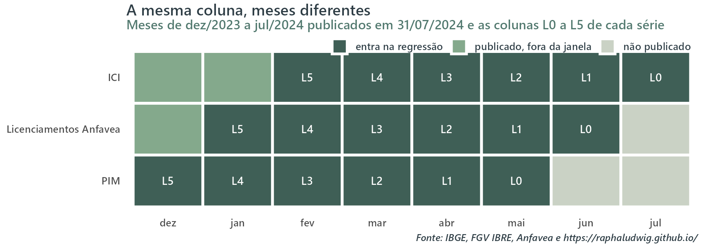
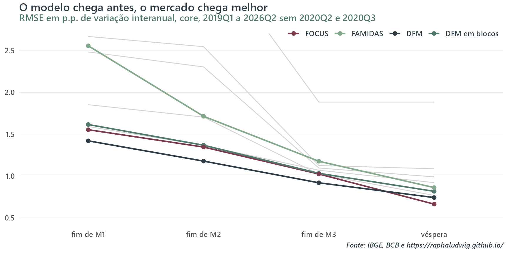
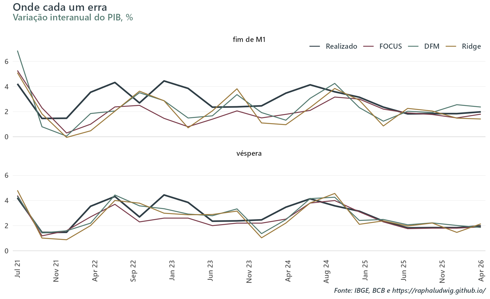
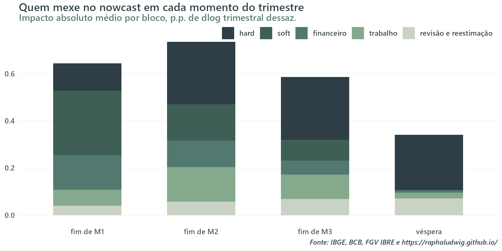
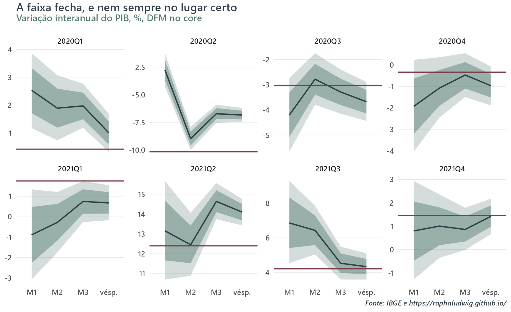
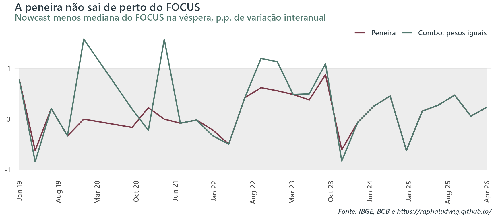
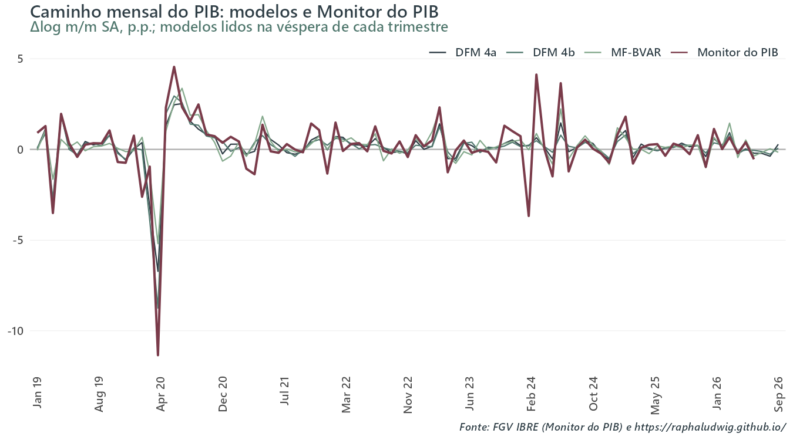

O PIB antes do PIB: um nowcasting em pseudo tempo real para o Brasil com FOCUS como régua
nowcasting
econometrics
gdp
dfm
midas
x13
Calendário de divulgações, X-13 a cada data, nove modelos e o que cada divulgação muda na previsão do trimestre.
Data de Publicação
28 de setembro de 2026
Um escopo no qual é particularmente interessante aplicar o horse race tradicional de modelos preditivos é o nowcasting. O analista monta um cardápio de especificações e engines diferentes; realiza projeções out-of-sample um passo à frente simulando atualizações em tempo real da sua base de dados escolhida; e coleta para os diversos pontos no tempo estatísticas de erro de projeção. Ao final, ele tem DFM contra MIDAS, BVAR contra random forest, uma tabela de RMSEs (ou qualquer outra métrica de erro) comparando os diversos modelos e um grupo de vencedores para serem utilizados no nowcasting da variável na próxima data alvo.
Neste post, vou usar um vocabulário próprio para evitar confusões. O conceito de modelo ou modelo preditivo aparecerá aqui como o par ordenado {especificação, engine / estimador}, no qual especificação corresponde à matriz de regressores utilizada e, se necessário, hiperparâmetros solicitados pela engine escolhida, enquanto engine vai ser o método computacional escolhido para fitar o modelo (regressão simples, random forest, DFM etc.).
Contudo, esse exercício que, no primeiro momento, busca a validação de algum modelo como o “melhor” tem várias armadilhas. Consequentemente, montei um exercício de horse racenowcasting como o descrito para o PIB brasileiro e busquei gastar a maior parte do tempo em algumas dessas armadilhas.
Três decisões costumam vir antes de qualquer modelo e, às vezes, mexem mais no resultado do que a troca de um estimador por outro.
O que se sabia em cada data? Aqui é uma dupla questão. A PIM de julho sai em setembro. Um nowcast datado de 31 de agosto que usa a PIM de julho está vendo o futuro. Respeito ao calendário é essencial. Além disso, a PIM, como vários outros indicadores, está sujeita a revisões. Portanto, o ideal é testar o modelo usando vintages dos períodos correspondentes para de fato simular qual era a informação disponível naquele momento.
Como dessazonalizar a série? A série com ajuste sazonal que o IBGE publica hoje passou por um filtro que olha para os dois lados. Ele sempre reestima o valor dos coeficientes e decide ex-post o tratamento para diversos outliers. Dessa forma, na série dessazonalizada corrente um ponto de 2019 foi calculado com dados de 2026. Usá-la num exercício histórico também é ver o futuro, só que de um jeito mais discreto.
Contra o que se compara? Bater um SARIMA é fácil [sic]. A previsão só vai ser útil de fato se o modelo acrescentar alguma coisa frente às projeções de especialistas, como a mediana do FOCUS (disponível de forma pública e gratuita).
Mostrar código
library(tidyverse)library(knitr)source("R/theme_blog.R")dir_dados <-"data/nowcasting"ler <-function(arquivo) {read_csv(file.path(dir_dados, arquivo), show_col_types =FALSE)}news_bloco <-ler("news_4a_bloco.csv")nowcasts <-ler("nowcasts.csv")realizado <-ler("realizado.csv")estabilidade <-ler("estabilidade_timings.csv")tempos <-ler("tempos.csv")# Números no texto com vírgula decimal.fmt <-function(x, digitos =2) {formatC(x, format ="f", digits = digitos, decimal.mark =",")}# "2024Q3" -> data do primeiro dia do trimestre, para o eixo X.trimestre_data <-function(x) yq(str_replace(x, "Q", " Q"))
Mas sem botar a carroça na frente dos bois. Antes de tudo, o que um nowcasting pode entregar e por que se digladiar com essas minúcias descritas acima?
A beleza desse procedimento é, de formas diferentes a depender do modelo escolhido, atualizar em tempo real, conforme os dados vão sendo divulgados, a projeção da variável dependente escolhida. Por exemplo:
No fim de junho de 2024, o DFM pequeno que uso neste post projetava -0,16% de variação trimestral dessazonalizada para o PIB do terceiro trimestre, uma leve queda. Um mês depois, em 31 de julho, projetava 1,01%. Dos 1,17 p.p. de diferença, 0,76 p.p. vieram das duas sondagens da FGV de julho, que saíram acima do que o modelo esperava. Dali até dezembro o nowcast andou pouco.
Na véspera da divulgação, já em variação interanual, ele marcava 4,15%. A mediana do FOCUS estava em 3,80% e o IBGE publicou 4,14%.

Figura 1: Revisão do nowcast do DFM para 2024Q3 entre timings consecutivos, decomposta por bloco de séries. ‘Demais’ soma a série sem bloco, a revisão de dados já publicados e a reestimação dos parâmetros. Os números em vinho são o nowcast antes e depois de cada revisão.
Escolhi esse trimestre porque ele é bonito. Aviso desde já que a maioria não é. O intuito do post, contudo, não é apenas checar se o gráfico acima é regra ou sorte. A ideia aqui também é explicitar diferentes processos de nowcasting e pinçar alguns modelos que parecem melhores em fazer projeção nesse contexto.
Adiantando a resposta, enquanto o trimestre está em curso, o DFM pequeno erra um pouco menos que o FOCUS. Na véspera da divulgação o FOCUS passa à frente. Entretanto, os testes estatísticos usados não separam um do outro.
Olhando o copo meio cheio, é um modelo de baixa manutenção que replica o FOCUS. Não precisa fazer tracker projetando bottom-up abertura por abertura. Já o copo meio vazio é que, após tanto suor virtual e esforço cibernético, meu procedimento foi incapaz de bater o benchmark. Contudo, o que me interessa aqui não é o resultado, mas sim, como falei, os amigos que fizemos durante o caminho até ele e como lidei com as armadilhas.
Todo o código está no repositório nowcasting-pib-br. Este post não estima nada. Ele lê os CSVs que a rodada gravou e desenha os gráficos. Os trechos de código que aparecem daqui para frente estão marcados como eval: false e são cópias do que roda lá.
O problema
Começando do começo.
O IBGE divulga as Contas Nacionais Trimestrais cerca de 60 dias depois do fim do trimestre. O PIB de julho a setembro de 2024 saiu em 3 de dezembro. Nesse intervalo de cinco meses entre o começo do trimestre e a divulgação saem dezenas de indicadores mensais que falam do mesmo período: a produção industrial, as vendas do varejo, o volume de serviços, as sondagens de confiança, os emplacamentos, o crédito, o câmbio.
Um nowcast é a projeção do PIB do trimestre corrente feita com o que já saiu desses indicadores. A palavra “previsão” atrapalha um pouco aqui porque sugere horizonte. O alvo não muda de lugar. O que muda é quanta informação existe sobre ele.
Para ser mais didático, avalio cada modelo em quatro datas por trimestre, as quais chamo de timings.
timing
data
para 2024Q3
fim de M1
último dia do primeiro mês do trimestre
31/07/2024
fim de M2
último dia do segundo mês
31/08/2024
fim de M3
último dia do trimestre
30/09/2024
véspera
dia útil anterior à divulgação do PIB
02/12/2024
O trimestre de 2024Q3 vai ser usado recorrentemente ao longo das próximas seções como exemplo ilustrativo.
A véspera é o timing mais duro para qualquer modelo. É quando o FOCUS está mais informado. Boa parte dos analistas (se não todos) que respondem à pesquisa já rodou o próprio tracking com todos os indicadores do trimestre na mão.
A janela de avaliação vai de 2019Q1 a 2026Q2. A estimação começa em 2011 e a amostra cresce a cada trimestre, sem janela móvel.
As regras do jogo
O calendário de divulgações
O ponto de partida é compilar em uma tabela as datas em que cada observação de cada série foi publicada. Para as pesquisas do IBGE e para o PIB, as datas vêm do próprio instituto, pela API de calendário e pelo FTP de publicações antigas. Para crédito e IBC-Br, vêm do calendário do BCB. Onde não achei histórico, caso das sondagens da FGV e dos emplacamentos da Anfavea, uso uma regra de dia típico do mês. As séries de mercado entram como média dos dias disponíveis até a data.
A figura abaixo mostra o resultado para o mesmo 2024Q3. Cada célula é o último mês de referência que estava publicado naquela data.

Figura 2: O que já tinha saído em cada timing de 2024Q3, para o PIB e as onze séries do core.
Três fatos estilizados nessa figura chamam a atenção e norteiam o resto do post. No fim de M1 não existe nenhum dado hard do trimestre, só sondagens e mercado. Por isso, a revisão de julho de 2024 veio em boa parte do bloco soft. No fim de M3 o trimestre acabou e o modelo conhece só um mês de indústria, varejo e serviços. E, nesse trimestre, no fim de M1 e de M2 o PIB do trimestre anterior ainda não tinha saído, o que cria um problema próprio que trato abaixo.
Esse formato de dados, com cada série terminando num mês diferente, é o que a literatura chama de ragged edge. Exercícios publicados o contornam de diferentes modos. Cortam todas as séries no mesmo mês, ou assumem uma defasagem fixa por série, ou agregam tudo a trimestral e esperam o trimestre fechar. Aqui a ponta irregular entra como ela é, com a data real de cada divulgação.
Sobre o PIB do trimestre anterior. Como estou projetando a variação trimestral dessazonalizada e, no fim de M1 e às vezes no de M2, o PIB de t-1 ainda não saiu, a regra que adotei é que cada modelo usa o próprio nowcast mais recente do trimestre anterior. Um modelo que errou o trimestre passado carrega esse erro para o nível do trimestre corrente e, portanto, para a variação interanual.
information_set() e o pseudo tempo real
O calendário diz quando cada número saiu. Falta garantir que, em cada data de corte, nenhum modelo use um número publicado depois dela. Esse é o erro mais fácil de cometer num exercício assim e o mais difícil de perceber depois, porque ele não quebra nada. O modelo só fica melhor do que seria na vida real.
A garantia que adotei está na estrutura do código. Todo modelo, em todo timing, recebe os dados por uma única função, information_set(), que estabelece os freios temporais necessários.
information_set(): o painel cortado na data e dessazonalizado com o que existia
cortar_na_data <-function(painel, calendario, data) { data <-as.Date(data) inicio_cal <-min(calendario$periodo) painel <-filter(painel, date <= data) recente <-filter(painel, date >= inicio_cal) publicado <-data_publicacao(recente$serie, recente$date, calendario) <= databind_rows(filter(painel, date < inicio_cal), recente[publicado, ]) %>%arrange(serie, date)}information_set <-function( data, painel, catalogo, calendario,trimestre =NA_character_,timing =NA_character_,inicio_ajuste =as.Date("2003-01-01")) { data <-as.Date(data) nsa <-cortar_na_data(cortar_painel(painel, inicio_ajuste), calendario, data)conferir_ultima_linha(nsa, catalogo) corte <-ajustar_corte(nsa, catalogo, inicio = inicio_ajuste)if (is.null(corte$fatores)) {stop("information_set: o alvo não ajustou em ", format(data)) }list(data = data,trimestre = trimestre,timing = timing,nsa = nsa,sa = corte$sa,fatores = corte$fatores,status = corte$status )}
Dada uma data, a função faz três coisas.
Corta o painel. Uma observação só entra se já tinha sido publicada naquela data, segundo o calendário da subseção anterior. Em 31 de julho de 2024 a PIM de maio entra e a de junho, que ainda não tinha saído, fica de fora. O histórico anterior ao início do calendário entra inteiro, porque foi todo publicado muito antes de qualquer data da grade.
Confere a ponta. Aqui é mais um debugging. Nenhuma série trimestral pode terminar num trimestre cujo último mês ainda não apareceu em nenhuma série mensal.
Dessazonaliza o que sobrou. O X-13 roda em cada série para cada ponto no tempo. A função devolve três coisas: as séries sem ajuste, as séries ajustadas e, para o PIB, os fatores sazonais projetados para os quatro trimestres seguintes. As duas próximas subseções explicam por que o ajuste é refeito a cada data e para que servem esses fatores.
Como não existem vintages para todos os dados, o exercício aqui é pseudo tempo real. Ou seja, cada corte respeita quando cada número saiu, mas não qual número saiu naquele ponto do tempo. O painel é uma foto tirada em setembro de 2026, com os valores de hoje. A PIM de maio de 2024 que o modelo vê já traz as revisões que o IBGE fez depois dessa data. Por isso o nome é pseudo tempo real, não simplesmente tempo real.
X-13 refeito a cada data
Tratei de ajuste sazonal no post anterior, mas vale retomar um ponto aqui. Tanto o pré-ajuste com RegARIMA quanto o X-11 utilizam dados anteriores e posteriores à data nas suas estimações. Quando o IBGE publica hoje a série dessazonalizada do PIB, o ponto de 2019Q2 foi filtrado com dados de 2020 a 2026. Baixar essa série e cortá-la em 2019 entrega ao modelo uma informação que ninguém tinha em 2019.
A saída adotada aqui é refazer o ajuste em cada data, só com a amostra que existia. O filtro continua bilateral, mas na ponta ele não tem futuro para olhar e se vira com projeções do próprio RegARIMA, como acontecia de verdade na época.
O IBGE documenta o procedimento de ajuste do PIB em nota técnica. Ajuste direto de cada série, X-11 dentro do X-13, transformação escolhida automaticamente, teste de AIC para dias úteis e Páscoa, pickmdl entre cinco modelos ARIMA e detecção de todos os tipos de outlier. O procedimento roda de novo a cada divulgação. O modelo que ele escolhe muda. Entre o quarto trimestre de 2025 e o primeiro de 2026 o ARIMA do PIB passou de (2 1 2)(0 1 1) para (2 1 0)(0 1 1), por exemplo. Rodando esse procedimento sobre a série sem ajuste inteira, desde 1996, a variação trimestral bate com a da série oficial até a quarta casa decimal.
Copiei o procedimento do IBGE em cada ponto no tempo.
No PIB a rodada também projeta quatro trimestres e guarda os fatores projetados. Eles levam o nowcast dessazonalizado de volta para a série sem ajuste, que é de onde sai a variação interanual. Assim, estou sempre comparando laranja com laranja.
Nem toda série passa pelo filtro. As que reprovam num teste de sazonalidade identificável entram sem ajuste. Câmbio, bolsa e juros ficam de fora por decisão. O teste roda uma vez só, na amostra cheia. O veredito fica fixo no catálogo de séries.
Do dessazonalizado de volta ao número do IBGE
Os modelos projetam a série dessazonalizada, que é onde a dinâmica do ciclo fica visível.
Entretanto, o FOCUS coleta a expectativa em variação interanual, sem ajuste. Por isso a métrica de avaliação do post é a variação interanual, tendo como gabarito a variação oficial publicada pelo IBGE. Para chegar nela a partir de um modelo em série dessazonalizada são feitos três passos:
O modelo devolve a variação trimestral dessazonalizada do trimestre alvo. Aplicada ao nível dessazonalizado do trimestre anterior, dá o nível dessazonalizado do trimestre alvo.
A rodada do X-13 daquela data projetou os fatores sazonal e de calendário do PIB para os trimestres seguintes. O nível dessazonalizado vezes os fatores dá o nível sem ajuste implícito.
O nível sem ajuste implícito sobre o nível publicado do mesmo trimestre do ano anterior, que sempre existe, dá a variação interanual projetada.
Para evitar confusão, vale retomar que existem três séries dessazonalizadas do PIB nesta história:
A oficial do IBGE, que não entra em nenhuma conta do exercício.
A minha série final, que sai de rodar o procedimento acima uma única vez sobre a série inteira do snapshot. É dela o realizado em variação trimestral que aparece ao lado da news.
A de tempo real, que é a que cada modelo vê em cada data, com a amostra cortada. São 188 versões dela, uma por conjunto de informação.
Por mais que o procedimento seja o mesmo do IBGE, o fato de, neste exercício, eu utilizar a série do PIB desde 2003 (em vez de 1996, como o dado oficial) faz com que a segunda série não crave a primeira. O pickmdl escolhe outro ARIMA, (0 1 2)(0 1 1), com fatores sazonais um pouco diferentes. Esse é mais um motivo para avaliar os modelos na variação interanual.

Figura 3: Diferença entre a variação trimestral do PIB na dessazonalização própria (série final do snapshot, spec acima) e na série oficial do IBGE.
A rodada principal, que chamo de trilha SA, é a descrita acima, com alvo e regressores ajustados pelo X-13 de cada data e depois recuperando a variação interanual não ajustada sazonalmente. Como robustez existe uma trilha NSA, em que o PIB entra sem ajuste e a sazonalidade vai para o lado direito da regressão. Ela só existe nos modelos que aceitam variáveis exógenas e aparece na seção de robustez, no fim do post.
A revisão tem que fechar
A última regra é sobre como explicar uma revisão do nowcast. O gráfico de abertura sai de uma decomposição que Bańbura e Modugno (2014) chamam de news. A ideia é que, com os parâmetros do DFM fixos e o passado intacto, o nowcast só muda entre duas datas por causa do que foi divulgado nesse intervalo. A contribuição de cada divulgação é a surpresa dela vezes um peso. A surpresa é o valor divulgado menos o que o próprio modelo previa para aquele número. Se a PIM vem exatamente como o modelo esperava, o nowcast não se mexe, por maior que seja o número.
Neste exercício, nenhuma das duas condições vale. Entre duas datas o X-13 roda de novo e muda o passado dessazonalizado. O DFM também é reestimado e muda os parâmetros. O pacote dfms calcula a news, mas sozinho não separa esses efeitos. Por isso quebro a revisão em três partes. Primeiro a reestimação, que é o quanto o nowcast muda só por trocar os parâmetros, com os dados antigos. Depois a revisão de dados, que é o quanto ele muda ao trocar os dados antigos pelos reajustados, sem acrescentar nenhuma observação nova. O que sobra é a news propriamente dita, só com o que saiu de novo. As três partes somam exatamente a revisão do nowcast.
news_dfm_4a(): surpresa vezes peso, mais revisão de dados e reestimação
Foquei em dois critérios para adicionar uma série como regressor no painel.
O primeiro é de reprodutibilidade. O leitor precisa conseguir baixar a série. O PMI da S&P Global e o IDAT do Itaú, por exemplo, ficam de fora por isso.
O segundo é cortar toda série cujo passado é refeito por um modelo de terceiro com informação posterior. O Monitor do PIB da FGV é o caso exemplar. A cada divulgação das Contas Trimestrais a FGV reescala os meses para que a média do trimestre case com o número do IBGE. Pelo mesmo motivo fica de fora o Google Trends, que é reamostrado a cada consulta. O IBC-Br também sai de um modelo e é revisado, mas a revisão é publicada e não usa o PIB do trimestre alvo para reconstruir o passado, então ele entra.
O Monitor volta no fim do post com outro papel, como referência para o caminho mensal que os modelos estimam dentro do trimestre.
Core, estendido e core longo
série
fonte
bloco
tratamento
IBC-Br
BCB
hard
dlog, X-13
PIM, indústria geral
IBGE
hard
dlog, X-13
PMC, varejo restrito
IBGE
hard
dlog, X-13
PMS, volume de serviços
IBGE
hard
dlog, X-13
Licenciamentos de veículos
Anfavea
hard
dlog, X-13
ICI, confiança da indústria
FGV IBRE
soft
nível, X-13
ICC, confiança do consumidor
FGV IBRE
soft
nível, X-13
Estoque de emprego formal
CAGED
trabalho
dlog, X-13
Concessões de crédito
BCB
financeiro
dlog, X-13
PTAX
BCB
financeiro
dlog, sem ajuste
Ibovespa
B3
financeiro
dlog, sem ajuste
O core tem as 11 séries da tabela acima e alimenta todos os modelos. O estendido tem 59, que são as aberturas das séries das pesquisas do IBGE por categoria e atividade, o resto das sondagens da FGV, PNAD, comércio exterior, fluxo de veículos em pedágios, carga de energia, papelão ondulado, combustíveis, passageiros aéreos, arrecadação e a projeção de safra do LSPA. Ele alimenta os modelos que aguentam painel largo e aparece como linha extra nas tabelas. A pergunta que ele responde é se cinco vezes mais séries compram alguma coisa.
Cada série pertence a um bloco, que vai importar no DFM em blocos e na leitura da news. No estendido são 36 séries hard, 10 soft, 7 financeiras, 3 de trabalho e 3 de agro.
O terceiro painel é o core longo, com 9 séries, que existe só para a seção de robustez, no fim do post. Três séries do core forçam o início da estimação em 2011, que são a PMS, as concessões de crédito na metodologia atual e o ICC. Sem elas e com a ocupação da PNAD retropolada, dá para começar em 2003. O core longo testa se 20 anos de amostra com 9 séries valem mais do que 8 anos com 11.
De onde vêm
Como no post da NAIRU, os dados vêm de uma infra própria, um data lake em que cada rotina de coleta grava uma versão datada de cada tabela. O trecho abaixo está aqui para ilustrar o processo. Tudo o que é público dá para refazer com sidrar, GetBCBData e rbcb. O repositório traz o painel pronto em parquet para as fontes cuja licença permite redistribuição, mais um script para o leitor buscar na origem as que não permitem.
Três leituras do painel (datalake.utils, não executado)
lake <-function(ds, tb) datalake.utils::read_vintage(ds, table = tb)# IBGE: PIM, indústria geral e categorias de usopainel_pim <-function() {bind_rows(lake("latam-brasil-pim", "headline") %>%filter(headline =="Indústria geral") %>%transmute(date, serie ="pim", valor = indice),lake("latam-brasil-pim", "categoria") %>%filter(categoria %in%names(categorias)) %>%transmute(date, serie =unname(categorias[categoria]), valor = indice) )}# BCB: FOCUS trimestral, mediana do PIB total, uma linha por dia de coletaler_focus_lake <-function() { x <- datalake.utils::read_vintage("latam-brasil-focus",table ="db_focus_quarterly" ) ref <-strsplit(x$DataReferencia, "/", fixed =TRUE) x %>%mutate(trimestre =paste0(vapply(ref, `[`, "", 2L),"Q",vapply(ref, `[`, "", 1L) ) ) %>%filter(Indicador =="PIB Total", baseCalculo ==0L) %>%transmute( trimestre,data_coleta =as.Date(Data),mediana = Mediana,media = Media,n_respondentes = numeroRespondentes ) %>%arrange(trimestre, data_coleta)}# Associação: Anfaveapainel_anfavea <-function() { nomes <-c(licen_total ="anfavea_licen",prod_total ="anfavea_prod",exp_total ="anfavea_exp" )lake("latam-brasil-anfavea", "db_anfavea") %>%filter(name %in%names(nomes)) %>%transmute(date, serie =unname(nomes[name]), valor = value)}
O FOCUS é o único dado do exercício que é tempo real de verdade. A API do BCB guarda a mediana de cada dia de coleta, então em 31 de julho de 2024 leio a mediana que estava publicada em 31 de julho de 2024, sem aproximação nenhuma.
A derivação do filtro de Kalman que está por trás de alguns deles já apareceu neste blog, no primeiro post.
Tabela 1: Lineup dos modelos
#
modelo
família
painéis
como vê a ponta irregular
densidade
1
SARIMA
benchmark
só o PIB
não vê
gaussiana
2
FOCUS
benchmark
nenhum
mediana do dia
não
3
Ridge
regressão
core, estendido
realinhamento vertical
não
4
LASSO
regressão
core, estendido
realinhamento vertical
não
5
Random forest
regressão
core, estendido
realinhamento vertical
não
6
FAMIDAS
regressão
core, estendido
pesos MIDAS
não
7
DFM
espaço de estado
core, estendido
filtro de Kalman
sim
8
DFM em blocos
espaço de estado
core, estendido
filtro de Kalman
sim
9
MF-BVAR
espaço de estado
core
filtro de Kalman
sim
Três jeitos de juntar mês com trimestre
O fato de o PIB ser trimestral e os indicadores serem mensais representa um problema que tem algumas soluções.
Um jeito tradicional e bem utilizado é montar bridge equations. A ideia é agregar cada indicador em trimestre, completando os meses que faltam de alguma forma. Pode ser com um ARIMA ou outro modelo preditivo, com carrego dos dados ou com a expectativa do analista. Depois, regride-se o PIB nesse número trimestral. Por ser um método mais convencional, não vou me debruçar sobre ele. Fujo do problema de três outros jeitos.
O primeiro jeito é não resolver, pois não precisa (!). O SARIMA só olha o PIB.
O segundo é manter o PIB trimestral e colocar os meses dos indicadores numa regressão, cada mês numa coluna.
Cada linha da regressão é um trimestre. À esquerda fica a variação trimestral do PIB. À direita ficam os últimos k meses publicados de cada indicador, um por coluna. No fim de M1 de 2024Q3, por exemplo, a última PIM publicada era a de maio, então a linha de 2024Q3 tem maio na primeira coluna, abril na segunda, março na terceira. No fim de M2 já saiu junho e as colunas andam um mês: junho, maio, abril.
A regressão estima um coeficiente para cada coluna a partir dos trimestres passados. Assim, ninguém precisa dizer como os meses se somam para formar o trimestre. Se a PIM de três meses atrás diz pouco sobre o PIB, o coeficiente dela sai pequeno. É o MIDAS sem restrição nos pesos, que a literatura chama de U-MIDAS. Ridge, LASSO, random forest e FAMIDAS são variações dessa ideia, que diferem no modo de impedir que o número de colunas saia do controle.
O terceiro é inverter o problema e supor que existe um PIB mensal que ninguém observa. Seja \(y^m_t\) a variação mensal desse PIB latente, em log. Se o PIB do trimestre é a média dos três meses, a variação trimestral, que só se observa no terceiro mês de cada trimestre, é aproximadamente
É a aproximação de Mariano e Murasawa (2003). Os pesos em triângulo saem de comparar a média de três meses com a média dos três anteriores. Essa terceira forma aparece nos casos dos DFMs e do MF-BVAR que são explicados mais à frente.
Os benchmarks
O SARIMA é um auto.arima() na variação trimestral da série dessazonalizada do PIB. Sem parte sazonal, já que a série chega ajustada. Ele não enxerga nenhum indicador mensal. Serve de piso.
O FOCUS é a régua. A pesquisa do BCB coleta a expectativa para o PIB trimestral em variação interanual, sem ajuste sazonal. Ele entra na avaliação exatamente assim, a mediana do dia contra o número do IBGE.
Regressão com realinhamento vertical
Ridge, LASSO e random forest são modelos de corte transversal, assim o ragged edge é um problema para eles, pois precisam de uma matriz retangular. A saída usual já citada, que é a do toolkit do FMI, é agregar cada série de alguma forma a trimestral.
Aqui eu uso o que chamo de realinhamento vertical. Cada série é deslocada para que a última observação publicada na data do timing ocupe a primeira coluna. As k-1 colunas seguintes (aqui, k=6) são as observações anteriores. O significado da coluna muda de série para série. No fim de M1 de 2024Q3, a primeira coluna da PIM é maio e a primeira coluna do ICI é julho.

Figura 4: Realinhamento vertical no fim de M1 de 2024Q3. Cada série entra na regressão pelas seis últimas observações publicadas, L0 a L5, qualquer que seja o mês a que se referem.
O preço é que o coeficiente de “L0 da PIM” não quer dizer a mesma coisa em M1 e em M3. Por isso estimo um modelo por timing. O treino, quando necessário, também é em pseudo tempo real. A linha de 2017Q2 do modelo de M1 usa o que estava publicado no fim de M1 de 2017Q2. O cross-validation que escolhe a penalização usa cinco blocos de trimestres adjacentes.
No core são 11 séries com seis colunas cada, mais a última variação publicada do PIB, o que dá 67 regressores para uma amostra de treino que tem cerca de 30 trimestres no começo da janela de avaliação e cerca de 60 no fim. Sem penalização isso não se estima.
O Ridge encolhe todos os coeficientes na direção de zero e não zera nenhum. O LASSO zera parte deles e, portanto, escolhe quais colunas ficam. O random forest troca a reta por uma média de árvores e captura não linearidade, ao custo de nunca prever fora do intervalo que viu no treino, o que cobra caro em 2020.
Perceba o porquê de 6 colunas. No fim de M3 de 2024Q3 as três últimas observações do ICI e da PTAX são julho, agosto e setembro, exatamente o trimestre alvo. Na véspera, dois meses depois, as do ICI viraram setembro, outubro e novembro. As da PTAX viraram outubro, novembro e um dezembro com um dia útil de média. Tudo isso estava publicado na data, então não há vazamento. Seis é o menor número de colunas que mantém o trimestre alvo inteiro na janela de qualquer série em qualquer timing.
Sobra uma pergunta. Na véspera, o que já saiu sobre outubro e novembro deve entrar no nowcast do terceiro trimestre? Não sei responder de antemão, então todo modelo que usa indicadores mensais roda nas duas leituras.
Com tudo. O modelo vê o que estava publicado na data, inclusive meses posteriores ao trimestre alvo. É a linha principal das tabelas.
Só o trimestre. O modelo só enxerga meses de referência até o fim do trimestre alvo. No nowcast de 2024Q3 os dados param em setembro. O que já saiu sobre outubro e novembro fica de fora. No treino vale o mesmo para cada linha. A comparação entre as duas leituras fica para a seção de robustez.
A primeira peça é o MIDAS (Mixed-Data Sampling), que permite relacionar indicadores de maior frequência ao PIB trimestral sem estimar um coeficiente independente para cada defasagem. A ideia é reduzir a dimensionalidade temporal. Em vez de estimar, por exemplo, seis coeficientes independentes para seis meses da PIM, estima-se uma pequena quantidade de parâmetros que descreve o formato da curva de pesos.
Beyhum e Striaukas implementam essa ideia usando uma base de polinômios de Legendre. Aqui o índice \(j\) não conta a partir do fim do trimestre no calendário. Ele conta a partir da última observação publicada de cada série na data do timing, o mesmo ponto de partida do realinhamento dos modelos acima.
Cada série entra com os seus seis últimos meses publicados. As quatro colunas de Legendre são somas ponderadas desses seis valores. O objetivo é reduzir a dimensionalidade temporal sem ainda afetar a cross-section e preservando flexibilidade na forma como observações mais recentes e mais antigas afetam o PIB.
Isso resolve parte do problema de dimensionalidade, mas ainda pode deixar centenas de regressores quando muitas séries entram no modelo. A segunda peça é, portanto, criar fatores através de PCA para procurar sinal comum entre os indicadores. Mas os autores deliberadamente não jogam fora as séries individuais depois de extrair os fatores. O problema óbvio é que agora, em vez de diminuir, o número de regressores aumentou.
A terceira peça lida com essa questão. O sparse-group LASSO (sg-LASSO) decide quais séries individuais realmente merecem entrar. A penalização atua tanto entre grupos quanto dentro deles, permitindo eliminar uma variável inteira (os quatro regressores MIDAS dela) ou manter a variável selecionando apenas algumas de suas componentes MIDAS. Ele faz simultaneamente seleção entre variáveis e seleção dentro da parametrização temporal de cada variável. Os fatores não sofrem essa penalização.
A ideia central é combinar dois tipos de sinal. Os fatores capturam o componente denso e comum da economia, enquanto o sg-LASSO permite que algumas séries tenham informação específica adicional para o PIB.
O pacote midasml traz a função pronta, precisando de poucas alterações.
Frequência mista em espaço de estado
Os outros três modelos tratam o PIB mensal como variável latente. O painel também não para no fim do trimestre alvo. Na véspera entram também os meses seguintes que já foram publicados. O suavizador decide quanto eles dizem sobre o trimestre que fechou. É a prática da literatura e o caso base neste exercício. Como nos outros casos, estimo também modelos com dados travados até o trimestre alvo do nowcasting para robustez.
O DFM é o modelo de fatores dinâmicos de Bańbura e Modugno na implementação do dfms. É o modelo em que mais me demoro, porque é dele que sai a news da abertura.
Todo indicador entra padronizado, com média zero e variância um. Cada um é escrito como uma regressão contra fatores comuns que ninguém observa. São as equações de observação. Os coeficientes dos fatores eu chamo de cargas. Para a série \(i\) no mês \(t\),
com \(Q = \text{Var}(u_t)\) e \(\sigma_i^2 = \text{Var}(\varepsilon_{it})\).
Os fatores \(f_t\) são dois e seguem um VAR(1), a escolha tradicional. Eles resumem o estado da economia no mês. O componente idiossincrático \(e_{it}\) é o que sobra de cada série depois de descontado o ciclo. Os idiossincráticos são independentes entre si, cada um com a sua variância. Eles podem ser ruído branco ou ter estrutura própria. Aqui cada um segue um AR(1).
Uma consequência prática do AR(1) é que \(e_{it}\) passa a morar no vetor de estado junto com os fatores. Quando a PIM surpreende, o filtro reparte a surpresa. A parte que é ciclo move \(f_t\). A parte que é desvio persistente da própria PIM move \(e_{\text{PIM},t}\).
O PIB mensal latente é mais uma linha desse sistema, com carga própria e idiossincrático AR(1) próprio, \(y^m_t = \lambda_y' f_t + e_{y,t}\). Essa linha nunca é observada. O que se observa é o PIB trimestral. Basta substituir a equação do PIB mensal na equação dos pesos em triângulo de Mariano e Murasawa para juntar as duas:
Essa é a equação de observação do PIB trimestral, que só tem dado no terceiro mês de cada trimestre.
Os parâmetros \(\{\lambda_i, A, Q, \rho_i, \sigma_i^2\}\) saem do algoritmo EM. O EM é o laço de fora. A cada volta ele chama por dentro o filtro e o suavizador de Kalman, que reconstroem os fatores dados os parâmetros. Depois, reestima os parâmetros dados os fatores. Para a primeira volta ele precisa de um chute.
O chute, tanto em Doz, Giannone e Reichlin quanto em Bańbura e Modugno, sai de um PCA. Os buracos do painel são preenchidos provisoriamente, inclusive os meses 1 e 2 de cada trimestre na coluna do PIB trimestral. Na matriz preenchida, o PCA estima os fatores. Com eles em mãos, uma regressão de cada série mensal nos componentes dá as cargas. Um AR(1) nos resíduos dessa regressão, só nos meses em que a série foi observada, dá \(\rho_i\) e \(\sigma_i^2\). Um VAR(1) nos fatores dá \(A\) e \(Q\).
O PIB é o caso especial. É aqui que Mariano-Murasawa já aparece. Não dá para regredir o PIB mensal nos componentes, porque ele não existe nos dados, mas a equação acima resolve. A carga inicial do PIB sai de uma regressão restrita do PIB trimestral observado nos componentes de \(t\), \(t-1\), \(t-2\), \(t-3\) e \(t-4\), com os cinco coeficientes forçados a ficar na proporção 1:2:3:2:1. O AR(1) do idiossincrático do PIB não é estimado no chute. O \(\rho\) e a variância começam fixos.
Falta o estado inicial. O filtro precisa de um \(f_0\) e da variância dele, \(P_0\). Como tudo está padronizado, \(f_0\) começa em zero, que é a média. \(P_0\) vem do chute de \(A\) e \(Q\) e começa na variância de longo prazo que eles implicam, a matriz que resolve \(P = A P A' + Q\). Os dois também são atualizados a cada volta.
Com o chute pronto começa o passo E. O filtro e o suavizador de Kalman rodam no painel original, com os buracos de volta e o PIB trimestral entrando pela equação de observação acima. O suavizador devolve o estado inteiro e, para cada mês, três objetos. O primeiro é \(\hat f_t\), o valor suavizado do fator. O segundo é \(P_t\), a variância dele, que mede a incerteza sobre esse valor. O terceiro é \(P_{t,t-1}\), a covariância entre o erro de \(f_t\) e o de \(f_{t-1}\).
Com eles vem o passo M, que refaz as regressões com três diferenças. A primeira é que não preenche mais os buracos. Cada regressão de carga usa só os meses em que a série foi observada. As demais usam todos os meses. A segunda é que, antes de regredir uma série no fator, desconta dela o idiossincrático que o suavizador já estimou, o que só é possível porque o AR(1) põe \(e_{it}\) dentro do estado. A terceira, que é a que importa, é que usa a incerteza dos fatores. Onde a regressão ingênua usaria \(\hat f_t \hat f_t'\), o passo M usa \(\hat f_t \hat f_t' + P_t\).
É o \(P_t\) que separa o EM de um “estima o fator, roda a regressão, repete” ingênuo. Nos meses em que o fator está mal determinado, na ponta e no começo da amostra, a regressão não trata o valor estimado como se fosse dado. Para ver por quê, pense num fator só e numa série sem idiossincrático AR. A regressão que se quer rodar é a de \(x_t\) contra o fator verdadeiro,
Só que \(f_t\) não se vê. O que se tem é \(\hat f_t\). O \(f_t\) verdadeiro é \(\hat f_t\) mais um erro de variância \(P_t\). Numerador e denominador reagem de forma diferente a isso. No numerador \(x_t\) é dado, então a melhor estimativa de \(x_t f_t\) é \(x_t \hat f_t\) e nada muda. No denominador vale a regra de sempre, \(E[Z^2] = (E[Z])^2 + \text{Var}(Z)\). A melhor estimativa de \(f_t^2\) passa a ser \(E[f_t^2 \mid \text{dados}] = \hat f_t^2 + P_t\). Fica
Como \(P_t\) nunca é negativo, a carga do EM sai menor em módulo. A que erra é a ingênua. O suavizador puxa \(\hat f_t\) para zero onde há pouca informação, então \(\hat f_t\) varia menos que o \(f_t\) verdadeiro.
Com os parâmetros novos volto ao passo E, depois ao M. O ciclo se repete até convergir. No fim o EM devolve os parâmetros e a série dos fatores.
O nowcast é o PIB trimestral que a equação de Mariano e Murasawa devolve no terceiro mês do trimestre alvo, aplicada aos PIBs mensais suavizados e com a padronização desfeita. De brinde, a equação de observação do PIB mensal dá uma série do PIB mensal, \(\hat y^m_t = \lambda_y' \hat f_t + \hat e_{y,t}\).
Quando sai um dado novo na ponta, ele chega com uma surpresa em relação ao que o modelo previa para aquela série naquele mês. A news só existe aqui porque o DFM prevê as próprias séries do painel. Antes de a PIM sair, o modelo tem uma previsão para ela. A surpresa é a diferença. O DFM refaz tudo do zero com o painel novo, do chute ao suavizador, até chegar a parâmetros e fatores novos. No core são 11 séries e o PIB, reestimados em todo timing. É esse o “DFM pequeno” da abertura.
O DFM em blocos, mais abaixo, poupa custo computacional. Ele congela os parâmetros do fim de M1 e roda só o filtro e o suavizador no painel novo.
Rodar o filtro de novo com parâmetros fixos e com os dados mascarados para a disponibilidade antiga é o que permite decompor a revisão do nowcast nas três partes descritas em “A revisão tem que fechar”,
A news soma, para cada dado \(j\) divulgado entre as duas datas, um peso vezes uma surpresa. \(x_j\) é o valor divulgado e \(\hat x_j\) o que o modelo previa para ele. O peso \(w_j\) sai dos ganhos de Kalman com parâmetros fixos, não da mudança nas cargas.
A revisão de dados é o X-13 rodando de novo e mudando o passado dessazonalizado. A reestimação é o quanto o nowcast muda só por trocar os parâmetros, com os dados antigos. É nela que mora a mudança nas cargas. No DFM em blocos ela é zero nas revisões de M1 para M2, de M2 para M3 e de M3 para a véspera, porque os parâmetros não mudam.
O DFM em blocos acrescenta estrutura. A inspiração é o modelo do Fed de Nova York, mas não é exatamente aquele modelo. A estimação é o mesmo EM de Bańbura e Modugno descrito acima. No lugar de dois fatores que todas as séries carregam, há um fator comum a todo o painel e um fator local por bloco, que só as séries do bloco carregam. Para uma série \(i\) do bloco \(b\),
O fator do bloco soft captura o que as sondagens têm em comum entre si depois de descontado o ciclo, que pode ser humor e não atividade. O PIB carrega o fator comum e o do bloco hard. Bloco com menos de duas séries no painel é desligado, o que no core acontece com o de trabalho. Ele é o único modelo que não reestima em todo timing. Os parâmetros saem do EM no fim de M1. Nos outros três timings só o filtro roda, com os parâmetros congelados. A razão é simplicidade e custo computacional.
O MF-BVAR é o VAR de frequência mista de Schorfheide e Song (2015) no pacote mfbvar. Não há fatores. As 11 séries do core e o PIB mensal latente formam um vetor \(z_t\) que segue um VAR com cinco defasagens,
e o PIB trimestral observado entra pela mesma equação dos pesos em triângulo. A diferença para os DFMs está em quem fala com quem. Nos DFMs os indicadores só conversam com o PIB através dos fatores. No VAR cada indicador entra diretamente na equação do PIB e o PIB entra na de cada indicador.
O preço é o número de parâmetros. São 12 variáveis. Cada equação tem 60 coeficientes e uma constante, 732 no total, para uma amostra de 100 a 180 meses. O prior de Minnesota resolve isso encolhendo os coeficientes na direção de um modelo simples, em que cada variável depende sobretudo do próprio passado recente.
Combinações
As três combinações ficam para a seção Combos e o FOCUS. Duas são médias dos sete modelos, uma com pesos iguais e outra com pesos pelo inverso do RMSE passado. A terceira descarta os modelos que discordam do FOCUS antes de tirar a média.
Resultados de ponto
A métrica desta seção é a variação interanual do PIB, em pontos percentuais, contra o número que o IBGE publicou. A janela tem 30 trimestres, de 2019Q1 a 2026Q2. Dou destaque à amostra sem 2020Q2 e 2020Q3, com 28 trimestres. A amostra cheia fica ao lado. Os modelos foram estimados com 2020 na amostra, sem dummy nem outro tratamento para a pandemia.
Tabela 2: RMSE do nowcast em variação interanual, p.p., por timing. As quatro primeiras colunas são da amostra sem 2020Q2 e 2020Q3, as quatro últimas da amostra cheia.
modelo
painel
M1
M2
M3
vésp.
M1 (cheia)
M2 (cheia)
M3 (cheia)
vésp. (cheia)
SARIMA
core
3,82
3,78
1,88
1,88
4,28
4,04
3,43
3,43
FOCUS
1,55
1,35
1,02
0,66
1,67
1,58
1,16
0,65
Ridge
core
2,48
2,30
1,10
0,99
3,18
2,74
2,19
2,20
Ridge
estendido
2,48
1,68
1,09
1,10
3,17
2,38
2,18
2,39
LASSO
core
1,85
1,70
1,02
0,77
2,44
2,31
2,20
1,95
LASSO
estendido
1,87
2,14
0,99
1,67
2,78
2,74
2,16
2,66
Random forest
core
2,67
2,55
1,13
1,09
3,32
3,00
2,38
2,38
Random forest
estendido
3,10
2,88
1,21
1,11
3,66
3,29
2,55
2,52
FAMIDAS
core
2,56
1,71
1,18
0,86
3,87
1,68
1,35
1,12
FAMIDAS
estendido
4,18
3,45
2,01
4,38
6,93
4,34
4,72
4,43
DFM
core
1,42
1,18
0,92
0,74
1,94
1,16
1,09
0,95
DFM
estendido
1,47
1,31
1,02
0,87
2,71
1,28
1,02
0,86
DFM em blocos
core
1,62
1,37
1,03
0,82
2,58
1,33
1,14
0,88
DFM em blocos
estendido
1,96
1,80
1,11
0,91
2,69
1,74
1,47
1,43
MF-BVAR
core
1,59
1,37
1,07
0,92
2,16
1,50
1,36
1,42

Figura 5: RMSE por timing em variação interanual, painel core, amostra sem 2020Q2 e 2020Q3. Em cinza os demais modelos da tabela. O SARIMA fica fora da escala no fim de M1 e de M2.
Tiro quatro leituras da tabela e da figura.
A primeira é que o DFM pequeno fica à frente do FOCUS enquanto o trimestre está em curso. O DFM no core erra 1,42 no fim de M1, 1,18 no fim de M2 e 0,92 no fim de M3, contra 1,55, 1,35 e 1,02 do FOCUS. O DFM no estendido também fica à frente em M1 e M2 e empata no M3. O que ele tem a oferecer é velocidade. Agrega cada divulgação no dia em que ela sai. A mediana do FOCUS demora a andar.
A segunda é que na véspera a ordem se inverte. O FOCUS erra 0,66 e nenhum modelo chega lá. O DFM fica em 0,74, o DFM em blocos em 0,82 e o FAMIDAS no core em 0,86. Entre o fim de M3 e a véspera passam dois meses. O FOCUS é quem mais ganha com eles. Faz sentido. Quem responde à pesquisa nessa altura já rodou o próprio tracking com o trimestre inteiro de indicadores e sabe coisas que o painel não sabe, de greve a safra.
A terceira é o que não ajuda. O estendido piora o DFM, que vai a 0,87 na véspera com cinco vezes mais séries. Piora também o DFM em blocos. Os blocos, por sua vez, não compram nada. O DFM em blocos fica atrás do DFM nos quatro timings.
O FAMIDAS no estendido erra 4,38 na véspera. Quase tudo vem de um único trimestre. Na véspera de 2020Q1 ele projetou -22,2%, contra 0,4% do IBGE. Sem esse trimestre, o RMSE cai para 0,96. O recorte sem 2020Q2 e 2020Q3 olha o trimestre alvo, mas a véspera de 2020Q1 é o fim de maio de 2020, quando o painel já tinha abril. Minha hipótese é que alguma série do estendido que quase zerou em abril, como passageiros aéreos ou produção de veículos, entrou na janela de seis meses com um coeficiente estimado em anos de variações pequenas. O modelo é linear e não tem freio, então a queda passa inteira para o nowcast. Na leitura só com o trimestre, que para em março, o erro de 2020Q1 cai para cerca de um terço.
A quarta é o que o teste consegue afirmar. Uso Diebold-Mariano com a correção de Harvey, Leybourne e Newbold. Entre o DFM no core e o FOCUS os p-valores são 0,47, 0,31, 0,59 e 0,50, do M1 à véspera. Com 28 observações, nem a vantagem do modelo nos três primeiros timings nem a do FOCUS na véspera tem significância.
Tabela 3: P-valor do teste DM-HLN contra o FOCUS, variação interanual, amostra sem 2020Q2 e 2020Q3. O sinal diz quem erra menos. Com sinal negativo é o modelo, com positivo é o FOCUS.
modelo
painel
M1
M2
M3
vésp.
SARIMA
core
(+) 0,18
(+) 0,18
(+) 0,08
(+) 0,05
Ridge
core
(+) 0,25
(+) 0,25
(+) 0,64
(+) 0,01
Ridge
estendido
(+) 0,21
(+) 0,07
(+) 0,57
(+) 0,03
LASSO
core
(+) 0,30
(+) 0,19
(−) 0,99
(+) 0,46
LASSO
estendido
(+) 0,41
(+) 0,26
(−) 0,83
(+) 0,24
Random forest
core
(+) 0,24
(+) 0,22
(+) 0,56
(+) 0,01
Random forest
estendido
(+) 0,24
(+) 0,23
(+) 0,23
(+) 0,00
FAMIDAS
core
(+) 0,15
(+) 0,22
(+) 0,32
(+) 0,19
FAMIDAS
estendido
(+) 0,28
(+) 0,24
(+) 0,18
(+) 0,31
DFM
core
(−) 0,47
(−) 0,31
(−) 0,59
(+) 0,50
DFM
estendido
(−) 0,67
(−) 0,81
(−) 0,99
(+) 0,05
DFM em blocos
core
(+) 0,77
(+) 0,88
(+) 0,96
(+) 0,24
DFM em blocos
estendido
(+) 0,29
(+) 0,26
(+) 0,51
(+) 0,03
MF-BVAR
core
(+) 0,89
(+) 0,94
(+) 0,86
(+) 0,29
A figura abaixo mostra os nowcasts de três modelos contra o realizado, de 2021Q3 em diante, para que os efeitos de base de 2020 não esmaguem a escala.

Figura 6: Nowcast contra a variação interanual publicada pelo IBGE, no fim de M1 e na véspera, de 2021Q3 em diante. DFM e Ridge no painel core.
O erro de todo mundo mora no mesmo lugar. Entre 2022 e meados de 2023 o PIB cresceu, na maior parte dos trimestres, mais do que as três linhas previam no fim de M1. Nos erros maiores, em 2022Q2 e no primeiro semestre de 2023, o DFM ficou bem mais perto do realizado do que o FOCUS. É daí que vem a vantagem que a tabela mostra nos três primeiros timings. Na véspera as linhas se fecham em volta do realizado. De 2025 em diante, nesse timing, quase não há o que separar.
De onde vem a revisão
Um nowcast que muda sem explicação serve pouco para quem tem que defender o número numa reunião. A news, que apresentei em As regras do jogo, transforma a revisão numa conta. Em símbolos, entre duas datas consecutivas \(d_0 < d_1\),
em que \(J\) é o conjunto de observações divulgadas entre as duas datas, \(x_j\) é o valor divulgado, \(\hat{x}_{j \mid d_0}\) é o que o modelo previa para ele com a informação anterior e \(w_j\) é o peso, que sai do ganho de Kalman.

Figura 7: Impacto absoluto médio por bloco em cada revisão do nowcast do DFM, painel core, 2019Q1 a 2026Q2 sem 2020. A barra de M1 compara com o fim de M3 do trimestre anterior.
O desenho geral é o que a figura do calendário prometia. No fim de M1 quem manda é o soft, com 0,27 p.p. de impacto médio, seguido do financeiro. Do M2 em diante o hard assume, com 0,27 p.p. O soft vai perdendo peso até sumir na véspera, quando as sondagens que saem já falam do trimestre seguinte.
A revisão de dados, que é em boa parte o X-13 mudando de ideia sobre o passado recente, pesa 0,07 p.p. na véspera junto com a reestimação. É pouco (ainda bem), mas mostra que o filtro sazonal também mexe no nowcast.
O trimestre de abertura foi escolhido a dedo. O contraponto honesto é 2026Q2.
O nowcast começou em 0,15, foi a 1,22 no fim de M1 com hard, financeiro e emprego puxando juntos para cima, devolveu boa parte no M2 ao cair para 0,53, subiu um pouco no M3 e terminou a véspera em 0,34. Somando o valor absoluto de todos os impactos, o nowcast andou 2,7 p.p. ao longo do trimestre. A revisão líquida, do começo ao fim, foi de 0,19 p.p. O PIB veio em 0,53%.
Os blocos se cancelam entre si e ao longo do tempo. O número final esconde um trimestre inteiro de idas e vindas. Para quem só olha o ponto, o modelo quase não mudou de opinião. A news mostra que mudou quatro vezes. Esse é um grande argumento pró-DFM.
Densidade
Um número sozinho não diz quanto confiar nele. Três modelos do lineup devolvem uma distribuição para o nowcast (e o SARIMA devolve uma gaussiana de brinde). No MF-BVAR a distribuição é a posterior. Nos dois DFMs ela é uma normal em volta do valor suavizado, com a variância do estado que o filtro calcula mais a variância idiossincrática do PIB. Os sorteios nascem em variação trimestral dessazonalizada. Para chegar à interanual, cada sorteio passa pelo mesmo caminho do ponto, que é o nível do trimestre anterior, o fator sazonal projetado e o nível de um ano antes.
A figura mostra o que isso dá nos oito trimestres mais difíceis da janela.

Figura 8: Densidade do nowcast do DFM, painel core, em variação interanual, nos quatro timings de cada trimestre de 2020 e 2021. A faixa clara vai do quantil 5% ao 95%, a escura do 16% ao 84%, a linha é a mediana e o traço em vinho é o número do IBGE. O eixo vertical muda de painel para painel.
A faixa estreita a cada timing, como deveria. Em 2020Q2 a mediana sai de -2,7% no fim de M1, quando abril ainda não tinha saído, vai a -8,9% no fim de M2 e volta para -6,8% na véspera, contra -10,1% do IBGE. Na véspera, a faixa desse trimestre é a mais estreita das oito e mesmo assim erra por mais de 3 p.p. A densidade fica mais confiante justamente no trimestre em que o ponto erra mais. Na véspera o número publicado cai dentro da faixa de 90% em 5 dos 8 trimestres.
As duas primeiras são médias dos sete modelos do core, ou dos seis do estendido, que não tem MF-BVAR, sempre na leitura com tudo. Uma usa pesos iguais. A outra pesa cada modelo pelo inverso do RMSE que ele tinha até ali,
em que \(S_t\) são os trimestres, de 2015Q1 em diante, cujo PIB já tinha sido publicado na data do nowcast, e \(e_{i,s}\) é o erro do modelo \(i\) no mesmo timing.
A terceira, que chamo de peneira, é inspirada no paper do BID. Em cada data ela descarta os modelos cujo nowcast interanual tem sinal contrário ao do FOCUS ou está a mais de \(\alpha\) pontos dele, tira a média simples dos que sobram e, se nenhum sobra, devolve o próprio FOCUS. Usei \(\alpha\) de 2,0 p.p. no fim de M1, 1,5 no fim de M2 e 1,0 no fim de M3 e na véspera.
Tabela 4: RMSE em variação interanual, p.p., amostra sem 2020Q2 e 2020Q3, e p-valor do DM-HLN contra o FOCUS na véspera. DFM e FOCUS repetidos da primeira tabela para comparação.
modelo
painel
M1
M2
M3
vésp.
p (vésp.)
Combo, pesos iguais
core
1,67
1,51
0,99
0,81
0,27
Combo, pesos iguais
estendido
1,60
1,49
1,10
1,15
0,04
Combo, pesos por RMSE
core
1,59
1,41
1,00
0,80
0,32
Combo, pesos por RMSE
estendido
1,51
1,51
1,04
1,11
0,03
Peneira
core
1,53
1,20
1,04
0,70
0,66
Peneira
estendido
1,50
1,22
1,02
0,75
0,17
DFM
core
1,42
1,18
0,92
0,74
0,50
DFM
estendido
1,47
1,31
1,02
0,87
0,05
FOCUS
1,55
1,35
1,02
0,66
As duas médias não melhoram o melhor membro. No core o combo de pesos iguais erra 1,67 no fim de M1 e 0,81 na véspera, contra 1,42 e 0,74 do DFM. O peso por RMSE ajuda pouco, com 1,59 e 0,80. A razão está na primeira tabela. Nos dois primeiros timings Ridge, random forest e FAMIDAS erram bem mais que os outros.
A peneira é outra conversa. Ela erra 0,70 na véspera, contra 0,66 do FOCUS, com p-valor de 0,66. Lido assim, é um modelo que empata com o mercado.

Figura 9: Distância entre o nowcast e a mediana do FOCUS na véspera, em variação interanual, para a peneira e para o combo de pesos iguais, painel core. A faixa cinza é o limite de 1 p.p. da peneira.
Só que o FOCUS é insumo dela. Por construção a peneira nunca fica a mais de \(\alpha\) do FOCUS. Na prática, fica bem mais perto. Na véspera a distância média é de 0,35 p.p., contra 0,53 do combo de pesos iguais, que usa os mesmos modelos sem olhar o mercado.
A diferença entre 0,81 e 0,70 vem toda dos 11 trimestres em que o FOCUS vetou alguém. Na janela inteira sobrevivem em média 5,3 dos sete. Em 3 das 30 vésperas não sobrou nenhum e o nowcast foi o próprio FOCUS. Uma combinação que só aceita quem concorda com o mercado vai errar parecido com o mercado.
O framing dela é outro. No fim de M2 a peneira erra 1,20, contra 1,35 do FOCUS e 1,51 do combo simples. Ali o FOCUS serve de filtro para tirar da média os modelos que ainda não viram dado do trimestre. É um resultado sobre usar o mercado para limpar os modelos.
O caminho mensal
Os três modelos de espaço de estado supõem um PIB mensal que ninguém observa. O suavizador devolve uma estimativa dele. Na véspera de cada trimestre guardei a variação mensal dos três meses do trimestre alvo. A comparação natural é o Monitor do PIB da FGV IBRE, que estima o PIB mensal por outro caminho, a partir de indicadores setoriais desagregados e depois ajustado às Contas Trimestrais. Ele é outra estimativa e não o gabarito, porque PIB mensal oficial não existe.

Figura 10: Variação mensal dessazonalizada do PIB, em p.p. de log, nos três modelos de frequência mista, lidos na véspera de cada trimestre, e no Monitor do PIB. Os termos de uso do Monitor vedam a redistribuição do dado, então esta é a única figura do post que chega pronta da esteira, sem CSV ao lado.
Os modelos e o Monitor contam a mesma história nos movimentos grandes, abril de 2020 e a volta. Fora de 2020 a correlação com o Monitor é de 0,75 no DFM, 0,70 no MF-BVAR e 0,64 no DFM em blocos. O DFM acerta o sinal do mês em 81% das vezes.
A diferença está na amplitude. O desvio padrão da variação mensal do Monitor é 1,15 p.p. O do DFM é 0,60, cerca de metade. Os picos do começo de 2024, em que o Monitor cai quase 4% num mês e sobe 4% no seguinte, não existem em nenhum dos três modelos. Faz sentido.
No DFM, o PIB latente é uma combinação de fatores que seguem um VAR. O suavizador reparte o trimestre entre os meses do jeito mais suave que os indicadores permitem. O Monitor herda o ruído mensal dos indicadores setoriais. No fim, os dois chegam a trimestres parecidos e discordam sobre o mês em que cada movimento aconteceu.
Robustez
Três escolhas do exercício podiam ter sido outras.
A primeira é deixar o nowcast da véspera olhar os meses posteriores ao trimestre. Uma alternativa natural é não permitir olhar dados após o trimestre alvo.
A segunda é dessazonalizar tudo com o X-13 de cada data. A outra opção seria modelar a variação trimestral sem ajuste com algum tratamento sazonal no lado direito das equações, como dummies de mês.
A terceira é começar a estimação em 2011 para ter onze séries. Aqui entra a base core longo apresentada anteriormente.
Esta seção refaz a conta mudando uma de cada vez, sempre em variação interanual e na amostra sem 2020Q2 e 2020Q3.
Só o trimestre
Na seção dos modelos ficou aberta uma pergunta. Na véspera, o que já saiu sobre o trimestre seguinte ajuda no nowcast do trimestre que fechou?
Tabela 5: RMSE na véspera em variação interanual, p.p., amostra sem 2020Q2 e 2020Q3, nas duas leituras. Com tudo é a linha principal, que usa o que estava publicado na data. Só o trimestre para no último mês do trimestre alvo. O FOCUS está na última linha como referência.
modelo
painel
com tudo
só o trimestre
Ridge
core
0,99
1,05
Ridge
estendido
1,10
1,15
LASSO
core
0,77
0,88
LASSO
estendido
1,67
1,02
Random forest
core
1,09
1,11
Random forest
estendido
1,11
1,18
FAMIDAS
core
0,86
0,68
FAMIDAS
estendido
4,38
1,71
DFM
core
0,74
0,74
DFM
estendido
0,87
0,87
DFM em blocos
core
0,82
0,82
DFM em blocos
estendido
0,91
0,91
MF-BVAR
core
0,92
0,93
FOCUS
0,66
Para os três modelos de espaço de estado a resposta é que tanto faz. Apagar os meses posteriores ao trimestre leva o DFM no core de 0,742 para 0,738, o DFM em blocos de 0,817 para 0,820 e o MF-BVAR de 0,921 para 0,928. Quando o trimestre inteiro de indicadores já está na mesa, o suavizador dá pouco peso a outubro e novembro.
O FAMIDAS é quem mais ganha com o corte. No core ele vai de 0,86 para 0,68, à frente do DFM. Os pesos MIDAS contam seis meses a partir do último publicado. Na leitura com tudo, nas séries rápidas, metade da curva cai sobre o trimestre seguinte.
Sem o X-13
Tudo o que veio até aqui passou pelo X-13 de cada data. Falta saber quanto do resultado depende disso. A alternativa mais simples é deixar a sazonalidade dentro do modelo. É o que faz a trilha NSA. O PIB e os indicadores entram sem ajuste. A sazonalidade vai para o lado direito com um conjunto fixo de regressores determinísticos: dummies sazonais, dias úteis e Páscoa. O conjunto é o mesmo em todo timing e não passa por teste de AIC. Cada família recebe esse tratamento de um jeito.
SARIMA. O auto.arima() roda na variação trimestral do PIB sem ajuste, com três dummies de trimestre, dias úteis e Páscoa como regressores.
Ridge e LASSO. Cada linha da regressão é um trimestre, então as dummies são de trimestre. Elas entram sem penalização.
FAMIDAS. A mesma ideia. As dummies e o calendário entram ao lado dos fatores, fora da penalização do sg-LASSO.
Random forest. Árvore não parcializa nada, então o trimestre do alvo entra como mais uma variável. O modelo roda em duas versões, com os indicadores sem ajuste e com os indicadores dessazonalizados e só o alvo sem ajuste.
DFM em blocos. As dummies vão para a equação de observação de cada série, \(x_{it} = \lambda_i' f_t + \gamma_i' d_t + e_{it}\), com 11 dummies de mês, dias úteis e Páscoa nas séries mensais e três dummies de trimestre no PIB. Os \(\gamma_i\) saem do mesmo passo M que estima as cargas. O nowcast sem ajuste sai direto da equação de observação do PIB.
DFM e MF-BVAR ficam de fora. Nem o dfms nem o mfbvar aceitam regressores exógenos na forma de que a trilha precisa.
Tabela 6: RMSE em variação interanual, p.p., painel core, amostra sem 2020Q2 e 2020Q3, nas duas trilhas, e p-valor do DM-HLN contra o FOCUS na véspera. Só entram os modelos que têm trilha NSA.
modelo
trilha
M1
M2
M3
vésp.
p (vésp.)
SARIMA
SA
3,82
3,78
1,88
1,88
0,05
SARIMA
NSA
2,93
2,86
1,93
1,93
0,07
Ridge
SA
2,48
2,30
1,10
0,99
0,01
Ridge
NSA
2,68
2,42
1,39
1,34
0,00
LASSO
SA
1,85
1,70
1,02
0,77
0,46
LASSO
NSA
1,80
1,64
1,24
0,93
0,09
Random forest
SA
2,67
2,55
1,13
1,09
0,01
Random forest
NSA
2,60
2,49
1,15
1,22
0,00
Random forest
NSA, indicadores SA
3,07
2,89
1,85
1,81
0,00
FAMIDAS
SA
2,56
1,71
1,18
0,86
0,19
FAMIDAS
NSA
2,18
1,80
1,34
0,62
0,76
DFM em blocos
SA
1,62
1,37
1,03
0,82
0,24
DFM em blocos
NSA
2,70
2,35
1,60
1,58
0,00
FOCUS
1,55
1,35
1,02
0,66
Os números mudam. Quem mais perde é o DFM em blocos. No fim de M1 ele vai de 1,62 para 2,70 e na véspera de 0,82 para 1,58. O FOCUS fica à frente dele nos quatro timings, com p-valor de no máximo 0,06.
Nos lineares a diferença é menor. O Ridge piora nos quatro timings. O LASSO melhora um pouco no fim de M1 e de M2 e piora no M3 e na véspera, de 0,77 para 0,93.
O FAMIDAS vai na direção contrária. Na véspera ele cai de 0,86 para 0,62, abaixo dos 0,66 do FOCUS. O teste não vê diferença.
A trilha SA continua a principal porque é a única em que todos os modelos rodam, inclusive o DFM que lidera a tabela principal. A NSA mostra que a conclusão do post não é artefato do X-13. O ranking entre os modelos, em parte, é.
Vinte anos com nove séries
A última pergunta é a que o estendido fez ao contrário. Em vez de mais séries, mais tempo. O core longo, descrito na seção dos dados, tira as três séries que prendem o core em 2011, acrescenta a ocupação da PNAD retropolada e começa a estimação em 2003, com 9 séries no lugar de 11.
Tabela 7: RMSE em variação interanual, p.p., amostra sem 2020Q2 e 2020Q3, no core e no core longo, e p-valor do DM-HLN contra o FOCUS na véspera. O MF-BVAR no core longo não tem a véspera de 2020Q1.
modelo
painel
M1
M2
M3
vésp.
p (vésp.)
SARIMA
core
3,82
3,78
1,88
1,88
0,05
SARIMA
core longo
3,63
3,62
1,17
1,17
0,01
Ridge
core
2,48
2,30
1,10
0,99
0,01
Ridge
core longo
1,77
1,54
1,04
0,86
0,26
LASSO
core
1,85
1,70
1,02
0,77
0,46
LASSO
core longo
1,56
1,35
1,06
0,85
0,22
Random forest
core
2,67
2,55
1,13
1,09
0,01
Random forest
core longo
2,33
2,18
1,01
0,98
0,07
FAMIDAS
core
2,56
1,71
1,18
0,86
0,19
FAMIDAS
core longo
1,52
1,47
1,02
0,76
0,51
DFM
core
1,42
1,18
0,92
0,74
0,50
DFM
core longo
1,29
1,09
0,86
0,71
0,75
DFM em blocos
core
1,62
1,37
1,03
0,82
0,24
DFM em blocos
core longo
1,43
1,14
0,91
0,64
0,86
MF-BVAR
core
1,59
1,37
1,07
0,92
0,29
MF-BVAR
core longo
1,34
1,19
0,92
0,82
0,29
FOCUS
1,55
1,35
1,02
0,66
Mais tempo ajuda quase todo mundo, o contrário do que fizeram as séries a mais do estendido. O DFM vai de 1,42 para 1,29 no fim de M1 e de 0,74 para 0,71 na véspera. O MF-BVAR e o DFM em blocos ganham mais. Com o core longo, os três modelos de espaço de estado ficam à frente do FOCUS do fim de M1 ao fim de M3. O DFM em blocos no core longo e o FAMIDAS na trilha NSA são as duas únicas linhas do post que passam o FOCUS na véspera, nenhuma das duas com significância.
Juntando as três perguntas, o desenho do post se mantém. Nenhuma variante produz um modelo que bata o FOCUS com significância. O que os modelos oferecem continua sendo chegar antes. O que muda de uma variante para outra é a ordem entre os modelos. Se eu tivesse que escolher uma mudança para a próxima rodada, seria a amostra. Vinte anos com nove séries fazem mais pelo nowcast do que cinco vezes mais séries em oito anos.
Conclusão
Nenhum modelo deste exercício bate o FOCUS. Enquanto o trimestre está em curso, o DFM pequeno erra um pouco menos que a mediana do mercado. Na véspera o FOCUS passa à frente, porque quem responde à pesquisa já tem o trimestre inteiro de indicadores na mão. Com 28 trimestres, o teste não separa um do outro em nenhum dos dois casos. O que o DFM entrega é um número atualizado no dia de cada divulgação, com uma conta que explica cada revisão, a um custo de manutenção baixo. Das escolhas testadas, a que mais ajudou foi alongar a amostra. Mais séries, no estendido, pioraram quase todos os modelos. A maior parte do trabalho, no fim, foi nas regras do jogo: o calendário, o X-13 refeito a cada data e a régua certa. Sem elas, qualquer tabela de RMSE sai melhor do que o modelo seria na vida real.